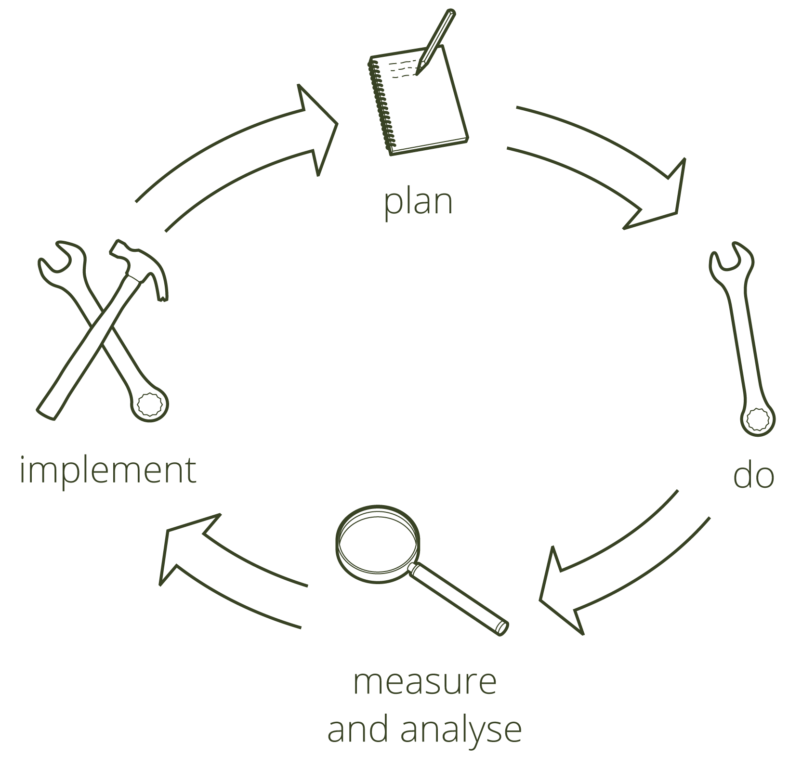

Team experience
Our Team International strategic experience achieved through the years in working internationally mainly with Henkel in projects to improve global profitability:
- Propose restructurings to improve the consumer goods manufacturing plants through production relocation in Europe, Asia and USA.
- Re-design packaging portfolio in order to harmonize and improve cost/flexibility, efficiency and productivity in order to minimize cost and long- term investments.
- Coordinate responsibility for all production activities, production location, investments, budgeting, cost reduction and optimization together with Plant Managers, Purchasing, Engineering, R&D and planning & logistics
- Act as Team leader for plants optimisation and project implementation in Europe Asia.
- Develop and implement regional Supply Chain for fast growing market in Asia in consumer goods plants with our leading JV companies and organization
- Carry out an International Benchmarking in order to define the best production strategy and leading investments to improve the global company productivity and profitability. For plants in Europe and USA
- Design of an on-line real time system to measure efficiency and productivity to help management for decision making on real time.
- To design an interactive budgeting system simulator in order to evaluate the effects of costs in a changing market in terms of product and mix environment.
- To design a Production Planning model in Excel and SAP, for consumer goods plants which improved significantly service reliability and production costs as it optimized bottle necks, manpower utilization and reduced the stock levels
- Promote Make or Buy feasibility studies analyzing savings, investments, timings and implications
- Elaborate Production relocation studies and plant shut down, saving, investments, timings and implications.
- Implement selected restructuring projects to fulfil targeted savings, investments, timings and safety
- Optimize the planning and logistic network to achieve the lowest stock level that guarantees an optimum service reliability level and costs.
Continuous Improvement
Operational excellence requires to build an easy and reliable information flow that involves all teamwork with a problem solving mentality and a continuous comparison of what we have done vs what we should have done in terms of efficiency, productivity, costs…
Achieving Efficiency effectiveness through a continuous feed back process that integrates product mix, Performances, and improvement measures into the daily work
By doing so, we will be able to detect problems and implement corrective measures and at the same time we will build an strong base of trust and teamwork as we will be able to learn from ourselves
Analized aspects
- Product portfolio
- Production structure
- Advice solutions to improve planning, monitoring their compliance in volume and delivery
- Analysis of production structure
- Definition of most relevant KPI to be controlled
- Design and implementation of simple and reliable solutions that monitor the production activities and help the daily analysis of operations
- Monitor the incidences and the reasons behind
- Study and implementation of customized solutions (realistic, reliable and effective) for continuous improvement involving an active production staff
- Check and evaluate the effect of adopted measures
- Do accurate forecast estimations of future developments and costs
- Preparation of summary and evolution reports of main indicators